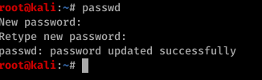
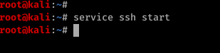
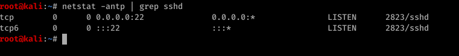
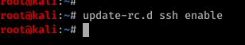
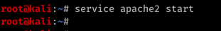
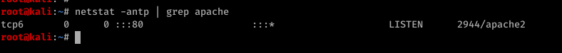
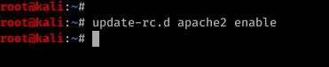

Index
1.2 Kali Linux Servislerini Yonetmek
1.2 Kali Linux Servislerini YonetmekKali Linux bilindiği gibi güvenlik profesyonellerinin en sık kullandığı Linux distrolarından birisidir. Kali üzerinde bir çok standart olmayan özellikler içermektedir. Kali ilk kurulduğuda üzerinde ssh,http,mysql servisleri kurulu bir şekilde gelmektedir. Ancak güvenlik nedeni ile bu servisler işletim sistemi ilk boot edildiği anda aktif olmamaktadır.
1.2.1 Default root Password
Kali Linux ilk kurulduğunda default root password'u toor ile gelmektedir. İşletim sistemini kurduktan sonra yapmamız gereken ilk iş bu default password'u değiştirmek olmalıdır. Bunun için passwd komutunu kullanmamız yeterlidir.
-passwd

1.2.2 SSH Servisi
SSH servisi bilindiği üzere uzaktaki bilgisayarları/sunucuları güvenli bir şekilde (encytpted), yönetmemizi sağlayan protokoldür ve defaultta TCP 22 portu üzerinden çalışmaktadır.
Kali üzerinde ssh servisini service ssh start komutu ile başlatabiliriz.
- service ssh start

SSH servisinin çalışıp çalışmadığını doğrulamal için Kali'nin TCP 22 portunu dinlemeye aldığını kontrol etmeliyiz. Bunun için netstat -antp | grep sshd komutunu çalıştırıp, tcp 22 portunu dinlelemeye aldığını gözlemlememiz yeterlidir.
- netstat -antp | grep sshd

Ancak şu an çalıştırdığımız ssh servisi işletim sistemi reboot olduktan sonra tekrar enable olmayacaktır. Eğer işletim sistemi reboot olduktan sonra da bu servisin aktif kalmasını istersek update-rc.d ssh enable komutunu
çalıştırmalıyız.
- update-rc.d ssh enable

1.2.3 HTTP Servisi
HTTP servisi penetrasyon testleri esnasında gerek bir site host etmek , gerekse victim üzerine, post exploit adımından sonra dosya indirmemizi sağlayan çok önemli bir servistir. HTTP servisi defaultta TCP 80 portu üzerinden çalışmaktadır. Kali üzerinde http servisini enable etmek için service apache2 start komutunu çalıştırmamız yeterlidir.
- service apache2 start

Bu komutu çalıştırdıktan sonra kali tcp 80 portunu listen etmeye başlayacaktır. Hemen verify edelim. Bunun için netstat -antp | grep apache komutunu çalıştırmalıyız.
- netstat -antp | grep apache

Eğer işletim sistemi reboot edildikten sonra da http servisinin aktif kalmasını istersek, update-rc.d apache2 enable komutunu çalıştırmalıyız.
- update-rc.d apache2 enable

1.2.4 Alıştırmalar
-a. Kali'nin root password'unu değiştiriniz
-b. Çeşitli kali servislerini start/stop etmeye çalışınız
-c. SSH servisinin sistemin boot anında enable kalmasını sağlayınız.